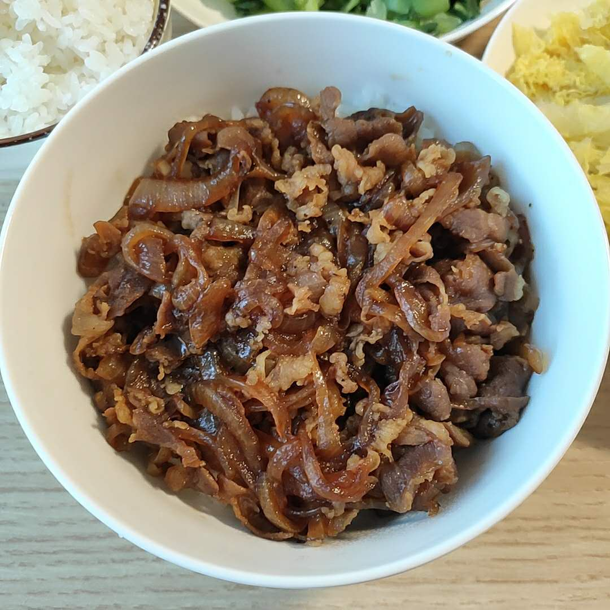
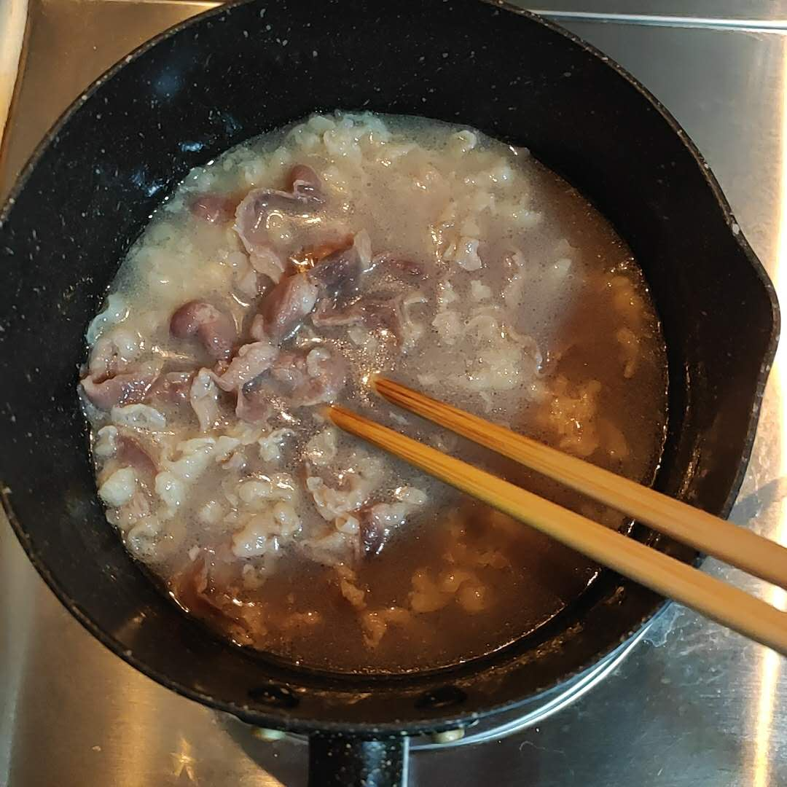
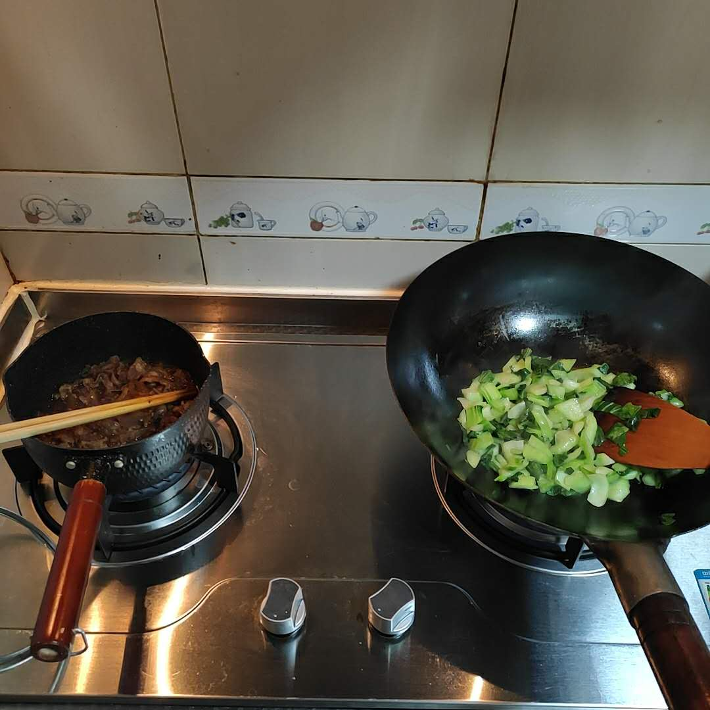

关于这道菜
这里是拖更的Miu。
解释一下拖更的原因吧
……沉默……
没有什么解释的理由，懒就是了。
肥牛丼也是懒人料理了，和咖喱一样是直接盖饭上吃就行的那种。
我猜最有名的应该是吉野家肥牛饭吧，但我没吃过。
大学的时候和阿崽在紫金港堕落街的一家小破店吃过一碗，
是阿崽的夜宵，这个人就是个夜宵狂魔。
肥牛饭是那种洋葱甜甜的，酱汁咸咸鲜鲜甜甜的，肥牛吸饱了汤汁的味道。
汤汁多留一些，盖在饭上后就可以搅和搅和，饭也会变得咸咸鲜鲜甜甜的。
就很好吃。

食材清单
| 材料 | 说明 | 用量 |
|---|---|---|
| 肥牛 | 肥牛可以根据经济实力和口感要求来买，一般来说越贵越好吃 | [0,吃饱]，建议200g |
| 洋葱 | 我喜欢白圆葱，紫的也行。洋葱在冰箱里能放很久，切开了用保鲜膜包好也能放很久。 | [0,吃饱]，建议1/3个洋葱 |
| 料酒 | 去腥，菜逼牛肉需要 | [0,适量] |
| 生抽 | 提供咸鲜味 | [0,适量]，建议两勺 |
| 老抽 | 上色用的 | [0,适量] |
| 蚝油 | 提供咸鲜甜味 | [0,适量]，建议1瓷勺 |
| 黑胡椒 | 提供黑胡椒的风味，按个人爱好添加 | [0,适量] |
| 糖 | 提供甜味，最后调味的时候加 | 适量即可 |
| 盐 | 提供咸味，最后调味的时候加 | 适量即可 |
| 食用油 | 炒洋葱用 | 适量即可 |
步骤总结
- 菜逼肥牛就焯水，牛逼肥牛就不焯水
- 洋葱切丝
- 洋葱炒软
- 加肥牛
- 加调料
- 咕嘟咕嘟到喜欢的程度
步骤详解
我的肥牛菜，先焯水。
水里可以加一勺料酒协助去腥。
焯水温度不用特别高，基本看到密集的小泡泡就能把肥牛丢进去。
焯水的时候拿筷子jio一jio，
让它成片状散开，变色后就可以捞出备用。
变色很快，几秒就够。

然后去洗一洗锅子，
加油，烧热后下洋葱，中火慢慢的炒软。
丢进去肥牛，
开始加调味料啦，
生抽、老抽、蚝油、黑胡椒都咔咔咔的丢里面，
这一步只要别放太多太咸，后面还会调咸度的。
然后加水和所有食材齐平，小火炖着就行。
时间可以长可以短，区别就是收汁程度和入味程度。
像我就会……在旁边炒个菜！

炒完菜来尝一尝咸淡，通过加盐和糖调节成喜欢的味道就可以出锅啦。
喜欢黑胡椒的可以在出锅后再撒点黑胡椒在表面。
技术总结
- 肥牛焯水的时候要用筷子拨拨开，不然不会是松散的片状而是一坨坨的卷状。
- 高效的时间利用是在炖肥牛的时候去做别的菜，因为炖的时候不费心基本可以不管，也不用担心炖过头。
- 成品当一碗菜也行，一个人的时候直接扣在饭上当盖饭吃也挺好。